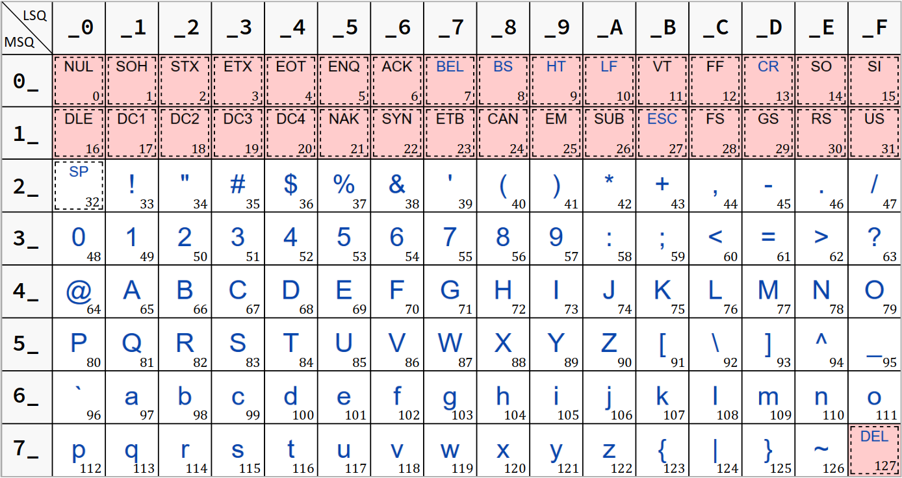

On a vu au chapitre C3‑I que les types signed char et unsigned char sont en fait des types entiers. Toutefois, le mot‑clef « char » (première syllabe du mot anglais character) réfère bien à la notion de caractère parce que l'étendue des valeurs positives de ces types suffit pour inclure tous les codes de n'importe quel jeu de caractères dits ASCII (restreint ou étendu).
Établie dans les années 1960, la norme ASCII (pour American standard code for information interchange) a d'abord introduit un jeu de 128 caractères encodés sur 7 bits. Qualifié aujourd'hui de restreint, ce jeu comprenait seulement (cf. la figure ci‑dessous) :
- quelques symboles d'usage très général (signes de ponctuation, opérateurs, délimiteurs), etc.
- les 10 chiffres décimaux dits arabes,
- les 26 lettres majuscules et minuscules de l'alphabet latin,
- des caractères spéciaux – espace arrière, tabulation, etc. – qui sont non imprimables (donc non représentés ci‑contre).
Pour répondre aux besoins des pays non anglophones, ce jeu restreint a rapidement été complété pour former des jeux étendus de caractères encodés sur 8 bits avec, pour chacun :
- une partie fixe, constituée du jeu restreint susmentionné ;
- une partie étendue constituée d'une page de code parmi diverses possibles ; sachant que chaque page de code avait pour but de fournir les caractères nécessaires à l'expression d'une ou plusieurs langues avec, typiquement, des lettres latines accentuées pour certaines langues européennes, ou bien tout l'alphabet grec, ou encore l'alphabet cyrillique, ou arabe, etc. (cf. en figure ci‑contre les caractères imprimables de la partie étendue du jeu ISO‑8859‑1 dit aussi latin‑1).
Quelle que soit la page de code adoptée, tout caractère d'un jeu ASCII étendu reste encodable sur un seul octet. C'est pourquoi, dans le code source d'un programme, on parle de caractère simple pour qualifier une donnée dont la valeur est prise dans un tel jeu de caractères. Mais il existe aussi la notion de caractère large, encodé sur plusieurs octets, qui sera abordée au chapitre C3‑IX .
Même si la norme ASCII est de plus en plus souvent remplacée par les nouveaux systèmes d'encodage dit Unicode, elle reste encore très employée dans les systèmes informatiques. D'ailleurs, elle ne disparaîtra probablement jamais dans la mesure où les codes du jeu ASCII restreint sont intégralement repris dans le format UTF‑8 pour encoder les 128 premiers caractères du jeu de caractères universels UCS.
La norme ASCII est donc incontournable dans l'apprentissage de la programmation et doit être parfaitement maîtrisée. Ce chapitre a donc pour objectif de présenter en détail :
- le jeu ASCII restreint, ainsi que diverses pages de code de jeu ASCII étendu, notamment celle dite Latin‑1 qui reste la plus employée en Europe ;
- la syntaxe de codage des valeurs de caractères en langages C et C++ ;
- la manipulation des valeurs de caractères, en particulier les fonctions déclarées dans le fichier d'en‑tête
ctype.hde la bibliothèque standard du langage C.
Les jeux de caractères ASCII
Avant que les normes Unicode ne viennent uniformiser les pratiques, diverses standards d'encodage des caractères ont émergé dans l'histoire de l'informatique, au gré des évolutions techniques. Encore aujourd'hui, certains normes anciennes coexistent avec les standard modernes. Et même, quelques domaines restent exclusivement tributaires du jeu ASCII restreint. On peut notamment citer les adresses de courrier électronique, les en‑têtes de message de certains protocoles de communication, ou encore la syntaxe fondamentale des langages de programmation.
Réputés élémentaire – en tout cas bien moins complexe que les formats d'encodage Unicode (UTF‑8, UTF‑16…) – la norme ASCII recèle tout de même quelques difficultés, en particulier pour l'emploi des différents jeux étendus.
Le jeu ASCII restreint
Le jeu de caractères ASCII dit restreint W – en anglais, non extended ASCII character set, aussi dit US‑ASCII, et normalisé ISO/IEC 646 W – comprend 128 caractères, dont 95 imprimables. On y trouve notamment :
- les lettres de l'alphabet latin (uppercase and lowercase letters) et les chiffres décimaux (decimal digits) ;
- des symboles d'usage général tels que les signes de ponctuation, les opérateurs mathématiques, les délimiteurs (parenthèses, etc.).
Ce jeu suffit pour écrire des textes en langue anglaise (ou américaine…) et coder des programmes dans la plupart des langages de programmation.
Le jeu ASCII restreint est intégralement encodable dans les valeurs positives du type signed char (cf. chap. C3‑I ) des langages C et C++.
Plus précisément, le jeu ASCII restreint est encodé sur les 7 premiers bits d'un octet (en partant du rang 0), avec des codes allant de 0x00 à 0x7F (0 à 127 en valeurs décimales). On y trouve les deux catégories suivantes (cf. le tableau ci‑après).
- Les 95 caractères imprimables W – codes
0x20à0x7E, représentés dans la table ci‑dessous sur fond blanc – sont constitués chacun d'un symbole graphique indissociable – son glyphe, cf. infra . - Les 33 caractères de contrôles W – codes
0x00à0x1Fformant le jeu de contrôle C0 W, ainsi que le code0x7F, tous représentés dans la table ci‑dessous sur fond rouge – n'ont pas de symbole mais sont désignés par un sigle.
Le caractère de contrôle BS (backspace, code 0x08, généré par la touche ⟵ du clavier W) effectue un effacement du dernier caractère saisi et recul du curseur au caractère précédent dans un environnement d'exécution.
Table du jeu ASCII restreint
Le jeu ASCII restreint est usuellement présenté de façon compacte sous la forme d'une table de 8 lignes (numérotées de 0_ à 7_) par 16 colonnes (numérotées de _0 à _F), comme ci‑dessous.
Les caractères y sont présentés dans l'ordre de leur code décimal croissant – c'est‑à‑dire de 0 à 127, le numéro étant noté en indice en bas à droite dans chaque case.
Le code ASCII hexadécimal d'un caractère est constitué de deux digits, chacun formant un quartet de bits – l'un de poids faible, l'autre de poids fort. Ces deux digits sont respectivement le numéro de colonne et le numéro de ligne du caractère. C'est pourquoi dans la table :
- le numéro de colonne est noté LSQ (least significant quartet) ;
- la numéro de ligne est notée MSQ (most significant quartet).
Le caractère « # » (hash, code décimal n° 35) a le code hexadécimal 0x23 car situé sur la ligne 2_ (MSQ) et la colonne _3 (LSQ). Et en effet, on a bien 35 = 2 × 16 + 3.
- Le code ASCII d'un caractère est une valeur entière purement ordinale. Il n'a aucun sens cardinal (c'est‑à‑dire qu'il ne représente aucune sorte de quantité) ; il indique seulement le numéro d'ordre du caractère dans un système de classification a priori arbitraire.
- Néanmoins, la classification des caractères n'est pas arbitraire. Leur position dans la table a été judicieusement choisie par les concepteurs de la norme.
- Ils sont regroupés par catégories et familles – d'abord les caractères de contrôles, puis quelques symboles, puis les chiffres, puis les majuscules et enfin les minuscules. Néanmoins, les symboles sont dispersés pour ne pas contrarier certains alignements.
- Pour les chiffres et les lettres, l'ordre usuel (numérique, alphabétique) prévaut.
- On observe des alignements remarquables par rapport au codage hexadécimal :
- le caractère de contrôle NUL a le code
0x0; on a vu qu'il est notamment employé pour marquer la fin des chaînes de caractères de style C (cf. chap. C2‑VI ) ; - le caractère d'un chiffre a un code dont le digit hexadécimal de poids faible vaut précisément ce chiffre (ainsi, « 0 » a le code
0x30, « 1 » a le code0x31, etc.) ; - la 1re lettre de l'alphabet a un code dont le digit hexadécimal de poids faible est
1(« A » est codé0x41, « a » est codé0x61) ; - la différence du code hexadécimal d'une minuscule moins celui de sa majuscule correspondante vaut toujours
0x20(ici, c'est une valeur cardinale, elle signifie qu'il y a 32 caractères d'écart ces deux lettres). - Le caractère « espace » (code
0x20) est désigné par un sigle – SP – du fait qu'il possède un glyphe vide, mais il est considéré comme imprimable – ce n'est pas un caractère de contrôle. - Les caractères de contrôle sont issus de la technologie obsolète du téléscripteur W (en anglais, teletype – cf. fig. ci‑contre). Aujourd'hui, beaucoup de ces caractères (comme SOH, STX, etc.) ne sont plus employés.
0x7F, généré par la touche SUPR du clavier W) fait partie des caractères de contrôle qui sont encore utilisés. Il ne doit pas être confondu avec BS (backspace). Pour cela, il est placé en dernière position du jeu restreint et il est rattaché au jeu de contrôle C1 W (norme ISO 6429) qui complète usuellement les 32 premiers caractères communs non affectés de la partie étendue des jeux ISO‑8859. Jeux ASCII étendus
Les jeux de caractères ASCII dit étendus W – en anglais, extended ASCII ou high ASCII – sont des jeux de 256 caractères, encodés sur 8 bits. Ils incluent tous une première partie commune « fixe » constituée du jeu ASCII restreint, lequel va du code 0 jusqu'au code 127 inclus.
La partie étendue d'un tel jeu de caractères va donc du code 128 au code 255. Elle contient des caractères pour exprimer une ou plusieurs langues.
Il existe plusieurs centaines de jeux ASCII étendus, mais à peine une quinzaine sont encore utilisés (et de moins en moins). Ils permettent de couvrir la plupart des langues, sauf celles du groupe CJK (chinese, Japanese, Korean) W qui nécessitent beaucoup plus de caractères, donc un encodage plus large.
La partie étendue d'un jeu ASCII peut être définie par différents « standards », selon le système d'exploitation de la machine. En particulier :
- les systèmes Linux privilégient les jeux étendus définis par les différentes parties numérotées de la norme ISO/IEC 8859 W ; dans un tel jeu, les 32 codes allant de
0x80à0x9Fsont usuellement affectés à caractères du jeu de contrôle C1 ; ils ne comptent donc que 96 caractères imprimables supplémentaires – soit 191 au total en comptant ceux du jeu ASCII restreint ; - les systèmes Windows utilisent plutôt des jeux spécifiques hérités de la technologie IBM et appelés pages de code W abrégés CP – pour code page – suivi d'un numéro ; dans un tel jeu, les 32 codes allant de
0x80à0x9Fsont usuellement affectés à caractères imprimables – ce qui fait potentiellement un total de 223 en comptant ceux du jeu ASCII restreint.
Quel que soit le système d'exploitation, il est en principe possible de mettre en œuvre n'importe que jeu ASCII étendu dans un éditeur de code ou dans un terminal de commandes en ligne dès lors que ce jeu de caractères est installé sur la machine.
Jeux ASCII étendus pour la langue française
Le jeu ASCII étendu le plus employé est celui de la norme ISO/IEC 8859‑1 W, également désigné Latin‑1 (cf. la table ci‑dessous).
Outre l'anglais, ce jeu permet d'exprimer une vingtaine de langues (allemand, espagnol, italien, néerlandais, danois, etc.), mais malheureusement pas complètement le français : il manque les ligatures « œ » et « Œ » et la majuscule accentuée « Ÿ »).
De plus, dans le jeu ASCII étendu Latin‑1, il manque le symbole monétaire € qui est indispensable aux langues européennes depuis l'introduction (en 2002) de la devise euro.
Pour permettre une expression complète du français, plusieurs variantes du jeu ISO/IEC 8859‑1 ont été créées.
- Dans les jeux Latin‑1, Latin‑9 et CP1252, on trouve deux caractères spéciaux car n'ayant pas de glyphe :
- l'espace insécable, code
0xA0et notée NBSP (no break space) W ; - la césure conditionnelle, code
0xADet notée SHY (soft hyphenation) W. - Dans la partie étendue du jeu Latin‑1, comme dans la partie restreinte, la différence de code d'une minuscule moins celui de sa majuscule est presque partout constante et vaut
0x20. - Dans la page de code CP1252, on trouve certains codes non attribués (cases vides à fond jaune). Ils ont été laissés ainsi pour d'éventuels usages à venir.
Autres jeux ASCII étendus
La norme ISO/IEC 8859 définit une quinzaine de jeux de caractères ASCII étendus. Ceux représentés en figure ci‑dessous en donne un aperçu pour les langues à alphabets non‑latin (codes 0xA0 à 0xFF).
Pour ces jeux, on trouve aussi une page de code Windows correspondante, qui comportent potentiellement 32 caractères imprimables supplémentaires. Même si elles adoptent des dispositions complètement différentes, elles répondent aux mêmes besoins que les normes ISO ci‑dessus (cf. la figure ci‑dessous – codes 0x80 à 0xFF).
Cas des environnements de programmation
Sous Linux
Sous Linux, l'encodage des caractères par défaut est en général le format à taille variable UTF‑8. Il est appliqué aussi bien dans les éditeurs de code que dans les terminaux de commandes en ligne.
Ce format prend en charge le catalogue universel des caractères (UCS – cf. chap. C3‑XI ). Sauf application spécifique, il n'est donc a priori pas nécessaire de sélectionner tel ou tel jeu de caractères puisque tous sont potentiellement affichables ou saisissables (dans une chaîne de caractères).
Même s'il n'est pas question ici de détailler le fonctionnement des paramètres régionaux W (locale) sous Linux, dans un terminal de commande bash :
- l'encodage des caractères en vigueur peut être affiché via la commande
locale charmap; - la liste de tous les formats encodages disponibles peut être affiché via la commande
locale -m.
De plus, durant le processus d'exécution dans un terminal d'un programme codé en langage C ou C++, le paramètre régional de langue par défaut est désigné C et le format d'encodage est typiquement UTF‑8, lequel est incompatible avec les codes ASCII étendus. Mais dans le code source du programme, on peut modifier ces paramètres régionaux en :
- ajoutant la directive :
#include <locale.h> - et dans la fonction
main(ou autre), en codant l'instruction :
SetLocale(LC_CTYPE, encodage local);
où l'encodage local est codé par une chaîne de caractères comme par exemple"fr_FR.iso-8859-1";
à condition bien entendu que la locale fr_FR.iso-8859-1 soit générée sur le système (pour cela, cf. le sujet de TP R2‑2 ).
Toutefois, certaines distributions comme Linux Mint n'autorisent au système aucun autre encodage qu'UTF‑8 G. Aussi, pour changer l'encodage des caractères dans le flot de sortie lors de l'exécution d'un programme, une autre solution simple consiste à recourir à l'utilitaire luit . Enchaîné à la commande d'exécution d'un programme, il transcode le flot de sortie de ce dernier dans le format spécifié en paramètre. Par exemple, la commande :
luit -encoding iso-8859-1 printf '\xA9\n'
produit l'affichage ©. C'est bien le caractère dont le code est 0xA9 dans le jeu étendu ISO/IEC 8859‑1.
Le programme académique ci‑dessous permet d'afficher la partie étendue imprimable du jeu ISO/IEC 8859‑1 sur une machine à système Linux.
#include <stdio.h>
char * charset = "ISO-8859-1";
int main(void) {
printf("\n %s", charset);
for (int c = 0xA0; c <= 0xFF; c++) {
if (c % 0x10 == 0) printf("\n ");
if (c == 0xA0) printf("\n ");
printf("%c", c);
}
printf("\n\n");
return 0;
}
Si l'on se contente de compiler et d'exécuter directement ce programme, on obtient en sortie standard l'affichage défectueux suivant :
ISO-8859-1
����������������
����������������
����������������
����������������
����������������
����������������
Pour obtenir l'affichage souhaité, une solution consiste à l'exécuter via la commande luit comme ci‑dessous :
luit -encoding iso-8859-1 ./displayCharsetLin
où displayCharsetLin est le nom du fichier exécutable du programme. On obtient alors :
ISO-8859-1
¡¢£¤¥¦§¨©ª«¬®¯
°±²³´µ¶·¸¹º»¼½¾¿
ÀÁÂÃÄÅÆÇÈÉÊËÌÍÎÏ
ÐÑÒÓÔÕÖ×ØÙÚÛÜÝÞß
àáâãäåæçèéêëìíîï
ðñòóôõö÷øùúûüýþÿ
Sous Microsoft Windows
Les systèmes d'exploitation Microsoft Windows utilisent en interne le format d'encodage UTF‑16LE. Toutefois, ce n'est pas cet encodage qui est appliqué par défaut dans les environnements de programmation (éditeurs de code et consoles d'exécution ou IDE).
Prenons l'exemple de Code::Blocks (cf. chap. C1‑II ). Dans les versions pour l'Europe occidentale sur système Windows, l'encodage des caractères est en général paramétré en ASCII étendu avec :
- dans la fenêtre d'édition de code, la page de code CP1252 ;
- dans la console d'exécution, la page de code CP850 W héritée du système d'exploitation MS‑DOS W.
Or dans leur partie étendue, ces deux pages de code sont différentes. En particulier, contrairement à la page CP1252, la page CP850 n'inclut pas les ligatures « œ » et « Œ » ni les lettres accentuées « ÿ » et « Ÿ ».
De même, c'est la page de code CP850 qui est activée par défaut dans un terminal de commande CMD ou PowerShell. Dans tous les cas, on peut le constater en exécutant la commande chcp sans argument.
Sous Windows, si les entrées‑sorties d'un programme comportent des éléments de texte en français, il est recommandé d'employer préférentiellement la page de code CP1252 dans la console d'exécution.
En langages C et C++, pour changer la page de code de la console d'exécution d'un programme, on peut :
- directement dans la console, saisir la commande :
chcp n° de page - ou bien, dans le code source du programme :
- ajouter la directive :
#include <windows.h> - et dans la fonction
main(ou autre), coder l'instruction :
SetConsoleOutputCP(n° de page);
De plus, la console doit être paramétrée (via ses propriétés) avec une police d'affichage à chasse fixe W (monospace font) suffisamment riche pour inclure tous les caractères de la page de code – par exemple, une police comme Source Code Pro .
Enfin, l'éditeur de code doit éventuellement être paramétré ; par exemple, sous Code::Blocks, dans l'onglet Encoding settings ouverte via le menu Settings/Editor…, il faut choisir l'option As default encoding.
Le programme académique ci‑dessous permet d'afficher la partie étendue de la page de code CP1252 sur une machine à système Windows.
#include <stdio.h>
#include <windows.h>
int cp = 1252;
int main(void) {
SetConsoleOutputCP(cp);
printf("\n CP%d", cp);
for (int c = 0x80; c <= 0xFF; c++) {
if (c % 0x10 == 0) printf("\n ");
if (c == 0x80) printf("\n ");
printf("%c", c);
}
printf("\n\n");
return 0;
}
Cas du logiciel Arduino IDE
Rappelons que le logiciel Arduino IDE s'exécute sur la machine virtuelle JRE (Java Runtime Environment – cf. chap. C1‑III ). En conséquences, l'encodage des caractères dans l'éditeur de code et dans la fenêtre du moniteur série n'est pas géré par le système d'exploitation de la machine physique hôte. Il est imposé dans le code source du logiciel Arduino pour adopter le format UTF‑8.
L'UTF‑8 (8‑bit Unicode transformation format – cf. chap. C3‑IX ) est un format d'encodage des caractères de taille variable (de 1 à 4 octets).
Il est compatible avec le jeu ASCII restreint : les codes 0x00 à 0x7F correspondent respectivement aux mêmes valeurs de caractères dans les deux systèmes d'encodage.
Cette connaissance est décisive lorsque, dans un programme pour carte Arduino, on souhaite afficher sur le moniteur série des caractères hors du jeu ASCII restreint (par exemple, des lettres accentuées).
- Tant que ces caractères sont saisis sous forme de symboles dans l'éditeur de code source, la compatibilité est totale, puisque les deux fenêtres opèrent avec le même format d'encodage.
- En revanche, si les caractères sont saisis sous forme de codes (c'est‑à‑dire via une séquence d'échappement – cf. infra ), il est impératif de ne pas employer les codes ASCII étendus mais ceux de l'UTF‑8.
L'instruction Serial.print("é"); affiche bien le caractère « é » sur le moniteur série.
On pourra aussi coder Serial.print("\xC3\xA9"); pour afficher un « é » sur le moniteur série, puisque le code UTF‑8 de cette lettre est 0xC3A9 (2 octets W).
Syntaxe de codage d'une valeur de caractère
Syntaxe générale pour une valeur de caractère « isolé »
Dans un programme en langage C ou C++, on code une valeur de caractère isolé, (au sens où elle n'est pas formée au sein d'une chaîne de caractères), en la délimitant par des guillemets simples '' – à ne pas confondre avec les guillemets doubles "" qui sont réservés aux chaînes de caractères.
Dans la chaîne de format d'un appel d'une fonction d'entrée‑sortie standard du fichier d'en‑tête stdio.h, on impose cette valeur via la spécification de conversion %c (cf. chap. C2‑VI ).
L'expression '2' code la valeur de caractère « 2 » (le chiffre) – et non pas la valeur numérique 2 (le nombre).
Dans un programme compilé et exécuté sur OnLineGDB (chaîne de compilation GCC sous Linux) :
- l'instruction
printf("%c", '2');affiche2;
c'est la valeur de caractère du caractère « 2 » ; - l'instruction
printf("%d", '2');affiche50;
c'est la valeur décimale du code ASCII du caractère « 2 » ; - l'instruction
printf("%x", '2');affiche32;
c'est la valeur hexadécimale du code ASCII du caractère « 2 ».
Une expression de la forme
'caractère' est évaluée par défaut :
- dans le type
inten langage C ; - dans le type
unsigned charen langage C++ ;
On peut constater cette différence avec, par exemple, l'instruction :
printf("%zu", sizeof('2'));
Compilée et exécutée dans un programme sur OnLineGDB, cette instruction affiche :
- la valeur
4en langage C ; - la valeur
1en langage C++ ;
ces deux valeurs correspondant bien respectivement à la taille en octets des types int et unsigned char.
Notion de valeur de caractère
Cas des caractères imprimables – syntaxe automorphe
Pour un caractère imprimable, la valeur de caractère est directement son propre symbole graphique – on dit aussi son glyphe W, mais ici sans considérations typographiques.
Sauf pour quelques symboles réservés dans un contexte particulier, dans un programme, on emploie la syntaxe automorphe – c'est‑à‑dire directement son glyphe – pour coder une valeur de caractère (de même qu'en français, on peut désigner le chiffre « 2 » par lui‑même).
Cas des caractères de contrôle – séquence d'échappement
Pour un caractère de contrôle, la valeur de caractère est une notion abstraite puisqu'il n'a pas de glyphe et que son nom, ni même son sigle, ne sont jamais saisis lors de l'édition du code source et encore moins affichés dans une console lors de l'exécution.
En effet, on ne code par exemple ni 'backspace' ni 'BS' pour exprimer la valeur de caractère isolée du « retour arrière » du curseur.
Mais bien évidemment, il existe en langages C/C++ d'autres manières de procéder.
- La saisie dans le code source d'un caractère de contrôle s'effectue par une suite de symboles préfixée par le symbole réservé « contre‑oblique » (antislash)
\; on parle de séquence d'échappement W. - Lors de l'exécution, un caractère de contrôle ne produisant pas un symbole mais une action, sa valeur n'a en général pas de représentation statique.
- Dans les terminaux Linux qui, par défaut, utilisent le format UTF‑8, c'est soit l'espace (code
0x20), soit le caractère spécial de remplacement � (Unicode U+FFFD ) qui est employé ; - Sous Windows, tout dépend de la page de code sélectionnée – cf. par exemple le jeu de symboles de substitution pour le jeu de contrôle C0 (codes
0x00à0x1F) et le caractère DEL défini par la page de code CP850 W.
'\b'. printf("%c", '\b') – il est prévu de le faire apparaître sous la forme d'un symbole de substitution. On parle alors de mode graphique d'affichage. Dans tous les cas, une valeur de caractère reste une interprétation dans un format particulier (ici graphique, et non pas numérique) des bits stockés en mémoire ou dans un registre de calcul lors de l'exécution d'une programme – de même que toute valeur numérique est une interprétation dans un format donné (typiquement, une base de numération).
Codage des valeurs de caractères par séquences d'échappement
En langages C et C++, les séquences d'échappement permettent de coder n'importe quelle valeur de caractère, qu'il soit imprimable ou non.
Il existe différentes syntaxes possibles :
- certaines sont très courtes mais spécifiques à tel ou tel caractère ;
- d'autres sont plus longues mais polyvalentes.
Toutes les séquences d'échappement commencent par le préfixe \.
Syntaxe spécifique pour les symboles réservés
Rappelons (cf. supra ) que la syntaxe automorphe supra n'est pas possible pour certains symboles réservés du langage C qui remplissent un rôle particulier dans un contexte donné. Il s'agit des caractères :
' "
\
En effet, leur codage direct – soit en tant que valeur isolée, soit au sein d'une chaîne de caractères – engendrerait pour le compilateur une confusion avec leur rôle de délimiteur ou de préfixe.
Aussi, pour coder la valeur de ces trois caractères, on peut recourir respectivement aux séquences d'échappement :
\' \"
\\
On peut afficher :
-
'(single quote, code0x27) par l'appelprintf("%c", '\''); -
"(double quote, code0x22) par l'appelprintf("\""); -
\(bacslash, code0x5C) par l'appelprintf("\\").
printf("'")… printf("%c", '"')… printf("%c", '\') ni printf("\"). Syntaxe spécifique pour les caractères de contrôle usuels
Les caractères de contrôle les plus usuels sont codables par une séquence d'échappement abrégée de la forme :
\lettre
Ces séquences sont listées dans le tableau ci‑dessous.
| Caractère | Séquence | Mnémonique | Action |
|---|---|---|---|
| BEL | \a |
alert | émission d'un signal sonore |
| BS | \b |
backspace | saut du curseur au caractère précédent avec effacement |
| FF | \f |
form feed | saut du curseur à la page suivante |
| LF | \n |
new line (line feed) | saut du curseur à la ligne suivante |
| CR | \r |
carriage return | retour du curseur en début de ligne |
| HT | \t |
horizontal tabulation | saut du curseur à la tabulation horizontale suivante |
| VT | \v |
vertical tabulation | saut du curseur à la tabulation verticale suivante |
Dans les systèmes d'exploitation Microsoft Windows, un saut de ligne codé \n est systématiquement associé à un retour chariot pour constituer la séquence CR LF, issue de la technologie des machines à écrire Y. Le codeur n'a pas besoin de coder explicitement le caractère CR.
Syntaxe générale
Toute valeur de caractère simple d'un jeu ASCII restreint ou étendu peut être codée via une séquence d'échappement formée du préfixe \x – et non pas \0x – suivi du code ASCII hexadécimal du caractère.
-
\x1Bcode la valeur de caractère ESC (caractère de contrôle escape) ; -
\x41code la valeur de caractère « A » dans le jeu ASCII restreint ; -
\x80code la valeur de caractère « € » dans le jeu ASCII étendu avec la page de code CP1252.
Il existe aussi un syntaxe alternative préfixée par \ suivi du code ASCII octal du caractère. La base 8 étant désuète, cette syntaxe est aujourd'hui vivement déconseillée. Mais il important de se souvenir de son existence pour détecter d'éventuelles erreurs de codage.
Exception : on emploie encore la séquence d'échappement octale \0, car elle est encore plus simple que \x0. Elle code le caractère NUL qui est utilise comme marqueur de fin de chaîne de caractères en langage C (cf. chap. C2‑VI ).
Manipulation des valeurs de caractères simples
Opérations générales
Les types de caractères simples signed char et unsigned char étant fondamentalement des types entiers, toutes les opérations sur les entiers sont syntaxiquement applicables aux valeurs caractère.
Néanmoins, certaines opérations n'ont a priori aucun sens. Par exemple, que pourrait bien représenter l'expression valide 'a' * 'b' ?
Partant du fait souligné supra que les codes ASCII doivent être considérés avant tout comme des nombres ordinaux , les opérations pertinentes sur les valeurs de caractères simples sont celles listées ci‑dessous.
- L'affectation d'une valeur de caractère à une donnée déclarée ; elle procède comme n'importe quelle affectation.
- La différence entre deux valeurs de caractères ; elle prend une valeur cardinale, à savoir le nombre de caractères séparant ces deux valeurs dans un jeu ASCII restreint ou étendu.
- L'ajout ou la soustraction d'une valeur entière à une valeur de caractère ; elle retourne une valeur ordinale qui exprime un décalage de position dans un jeu ASCII restreint ou étendu.
- Toute comparaison entre deux valeurs de caractères – égalité, différence, etc. ; elle prend une valeur booléenne selon la position des deux valeurs de caractères dans le jeu ASCII.
L'instruction char firstDigit = '0'; déclare une variable nommée firstDigit et lui affecte la valeur de caractère « 0 », c'est‑à‑dire le chiffre zéro (à ne pas confondre avec le caractère NUL).
L'expression 'm' - 'a' donne le nombre de lettres comprises entre les lettres « m » et « a » (l'une des deux non comptée) dans le jeu ASCII restreint.
L'expression 'A' + 0x20 prend une valeur égale à celle de 'a'. En effet, dans le jeu ASCII restreint, toute lettre minuscule est positionnée par rapport à sa majuscule correspondante avec un décalage de 32 (0x20) positions – cf. supra .
L'expression ('A' <= c) && (c <= 'Z') prend la valeur 1 si la valeur de caractère de la variable c est comprise entre les lettres « A » et « Z » dans le jeu ASCII restreint – autrement dit s'il s'agit d'une lettre majuscule.
Les fonctions du module de bibliothèque ctype
Le fichier d'en‑tête ctype.h de la bibliothèque standard du langage C (cctype en C++) met à disposition du codeur 14 fonctions opérant sur des valeurs de caractères simples C :
- 12 fonctions de test,
- 2 fonctions manipulation.
Il est recommandé d'employer ces fonctions plutôt que de coder ses propres solutions pour obtenir les mêmes résultats.
Comme avec tout module de bibliothèque, pour pouvoir l'utiliser dans un programme, il faut d'abord coder la directive d'inclusion de son fichier d'en‑tête, à savoir en C :
#include <ctype.h>
Fonctions de test de caractères
Les fonctions de test déterminent l'appartenance d'une valeur de caractère à une famille remarquable (lettre, chiffre, caractère de contrôle, etc.) au sein d'un jeu ASCII restreint ou étendu.
Chaque fonction prend un argument de type int mais dont la valeur doit être comprise dans l'étendue du type unsigned char (c'est‑à‑dire entre 0x00 et 0xFF). Elle retourne dans le type int :
- la valeur
0en cas de non appartenance de l'argument à la famille spécifiée par le nom de la fonction ; - sinon, une valeur non nulle – mais pas forcément la valeur
1.
Toutes ces fonctions de test sont listées dans le tableau ci‑dessous.
| La fonction | teste si l'argument est… |
|---|---|
isalnum |
un caractère alphanumérique (lettre ou chiffre) |
isalpha |
un caractère alphabétique (lettre) |
islower |
une lettre minuscule, dite « bas de casse » (lower case) |
isupper |
une lettre majuscule, dite « haut de casse » (upper case) |
isdigit |
un chiffre décimal (digit) |
isxdigit |
un chiffre hexadécimal (hexadecimal digit) |
iscntrl |
un caractère de contrôle |
isspace |
un caractère d'espacement (SP, FF, LF, CR, HT ou VT) |
isblank |
un caractère « blanc » (SP ou HT) |
isprint |
un caractère imprimable, c'est‑à‑dire un caractère qui n'est ni « blanc », ni de contrôle |
ispunct |
un signe de ponctuation, c'est‑à‑dire un caractère imprimable qui n'est ni une lettre, ni un chiffre |
Quelle que soit l'implémentation :
- L'appel
isdigit('O')retourne la valeur0– nulle, donc faux au sens booléen – parce que le caractère « O » (lettre) n'est pas un chiffre. - L'appel
isalpha('o')retourne une valeur non nulle, donc vrai au sens booléen – parce que le caractère « o » est bien une lettre, sachant que : - sur un PC Linux avec la chaîne de compilation GCC, on obtient la valeur
1024; - sur un PC Windows avec la chaîne de compilation Mingw‑w64, on obtient la valeur
2.
Sous Linux, en ayant généré la locale fr_FR.iso-8859-15 (encodage Latin‑9), on peut tester le programme académique suivant (fichier testAlpha.c) qui teste si le caractère « œ » (code 0xBD) est bien une lettre (fonction isalpha) :
- avec le paramètre
LC_CTYPEpar défaut, à savoir"C.UTF‑8") - avec le paramètre
LC_CTYPEfixé à"fr_FR.iso-8859-15".
#include <stdio.h>
#include <ctype.h>
#include <locale.h>
int main(void) {
unsigned char c = '\xBD'; // char 'œ' in ISO-8859-15 (latin-9)
printf("!!isalpha('%c') returns:\n", c);
printf("\t%d with default C encoding\n", !!isalpha(c));
setlocale(LC_CTYPE, "fr_FR.iso-8859-15");
printf("\t%d with Latin-9 encoding\n", !!isalpha(c));
return 0;
}
En exécutant les commandes :
gcc testAlpha.c -o testAlpha luit -encoding iso-8859-15 ./testAlpha
on obtient la sortie standard attendue :
!!isalpha('œ') returns:
0 with default C encoding
1 with Latin-9 encoding
Remarque : il n'est pas possible de tester ce programme sur OnlineGDB, car on ne peut pas générer la locale fr_FR.iso-8859-15 sur le serveur d'exécution.
Fonctions de manipulation de caractères
Les deux fonctions de manipulation sont des fonctions de conversion de casse : respectivement, elles convertissent une lettre majuscule en minuscule et réciproquement.
Comme les fonctions de test, chacune prend un argument de type int mais dont la valeur doit être comprise dans l'étendue du type unsigned char (c'est‑à‑dire entre 0x00 et 0xFF). Elle retourne dans le type int la valeur décimale du code ASCII :
- de la minuscule (
tolower) ou la majuscule (toupper) correspondant à l'argument si ce dernier est une lettre ayant une telle correspondance dans le jeu ASCII ; - de l'argument lui‑même dans tous les autres cas (c'est‑à‑dire si la conversion n'est pas possible, notamment s'il ne s'agit pas d'une lettre ou s'il s'agit d'une lettre déjà de la casse demandée).
| la fonction | convertit l'argument (lettre) en… |
|---|---|
tolower |
minuscule (lower case) |
toupper |
majuscule (upper case) |
Quelle que soit l'implémentation :
- L'expression d'appel
toupper('a')retourne la valeur65qui est le code ASCII de la majuscule « A » correspondant à la lettre minuscule codée en argument. - L'expression d'appel
toupper('1')retourne la valeur49, à savoir le code ASCII du caractère « 1 », parce qu'il s'agit d'un chiffre et qu'il n'est donc pas possible de le convertir en majuscule.
Sous Linux, en ayant généré la locale fr_FR.iso-8859-15 (encodage Latin‑9), on peut tester le programme académique suivant (fichier testUpper.c) qui détermine la majuscule correspondante à la lettre « œ » (code 0xBD) :
#include <stdio.h>
#include <ctype.h>
#include <locale.h>
int main(void) {
unsigned char c = '\xBD'; // char 'œ' in ISO-8859-15 (Latin-9)
printf("Upper case of '%c' is '%c'.\n", c, toupper(c));
return 0;
}
En exécutant les commandes :
gcc testCtype.c -o testCtype luit -encoding iso-8859-15 ./testCtype
on obtient la sortie standard attendue :
Upper case of 'œ' is 'Œ'.
Remarque : la fonction toupper retourne bien la majuscule « Œ » correspondante à la minuscule « œ » alors que la différence des codes ASCII de ces deux lettres ne vaut pas 0x20 mais seulement 0x1 – contrairement à ce qu'il en est pour la quasi‑totalités des autres lettres du jeu étendu Latin‑9.
La fonction toupper C n'est donc pas implémentée par le simple décalage constant + 0x20 du code ASCII de son argument.